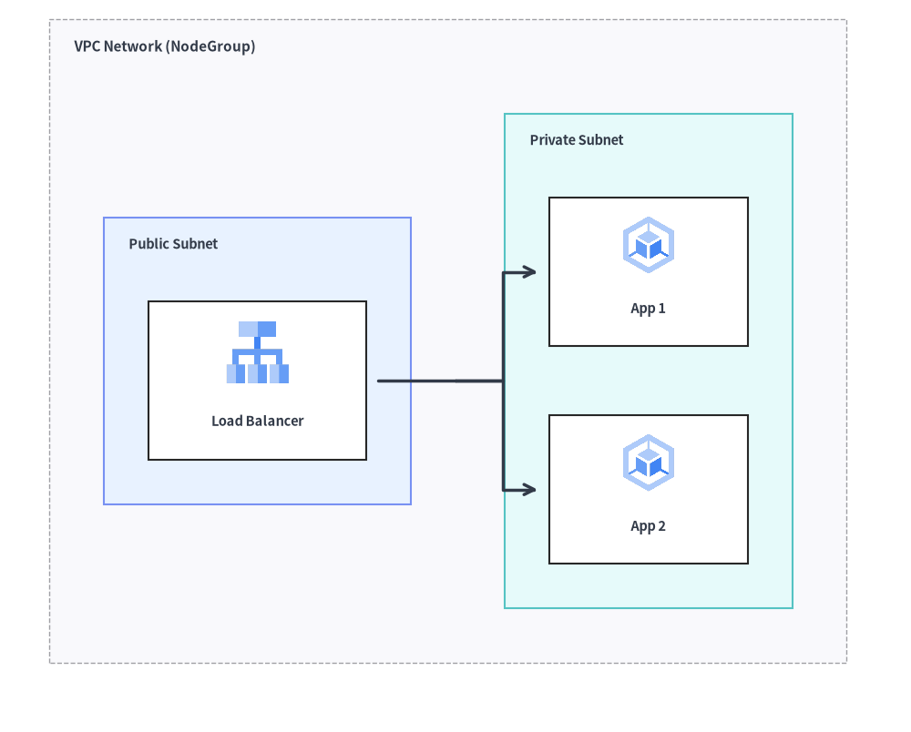
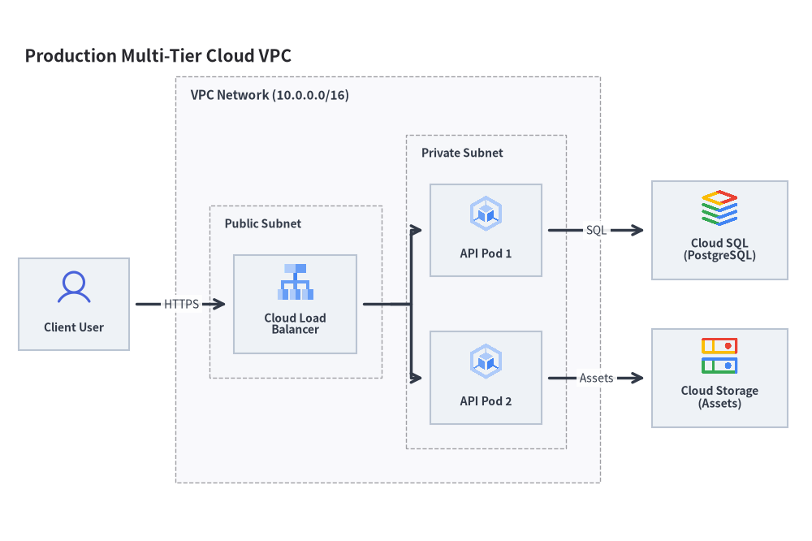
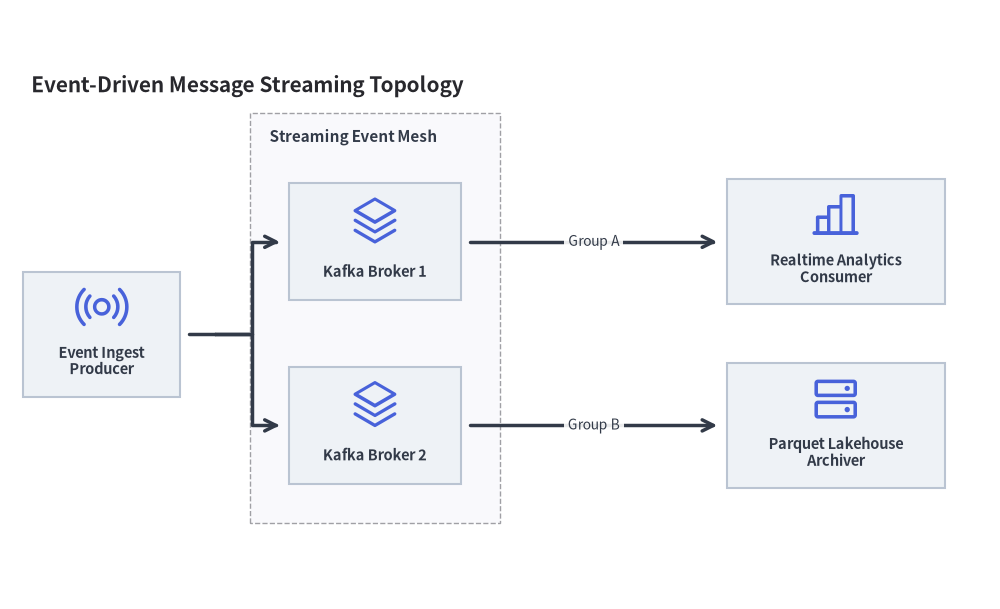

Architecture Diagrams: Cloud Topologies, Microservices & VPC Boundaries
ArchitectureDiagram visualizes distributed systems, cloud networks, microservices topologies, and infrastructure boundaries. It pairs icon-centric nodes with automatic hierarchical boundary boxes (NodeGroup) and multi-way branch routing.
1. Overview & Key Concepts

Source Code
from drawlib.canvas import save, setup
from drawlib.diagrams.architecture import ArchitectureDiagram, GcpIcon, Node, NodeGroup
from drawlib.styles import Styles
setup(width=92, height=74)
d = ArchitectureDiagram(
node_style=Styles.Primary,
node_text_style=Styles.DarkBold.patch(text_size=10.5),
edge_style=Styles.DarkBold,
edge_text_style=Styles.Dark.patch(text_size=10.5),
node_card_style=Styles.Neutral,
)
vpc = d.add(
NodeGroup(
title="VPC Network (NodeGroup)",
padding=5.5,
text_style=Styles.DarkBold.patch(text_size=11.0, halign="left", valign="top"),
),
xy=(3.0, 3.0),
)
pub_subnet = vpc.add(
NodeGroup(
title="Public Subnet",
padding=4.5,
style=Styles.PrimaryNeutral,
text_style=Styles.DarkBold.patch(text_size=10.5, halign="left", valign="top"),
),
xy=(5.5, 5.5),
)
lb = pub_subnet.add(
Node((22, 16), "Load Balancer", icon=GcpIcon.CLOUD_LOAD_BALANCING, icon_size=7.0, card_style=Styles.White),
xy=(14.5, 24.0),
)
priv_subnet = vpc.add(
NodeGroup(
title="Private Subnet",
padding=4.5,
style=Styles.SecondaryNeutral,
text_style=Styles.DarkBold.patch(text_size=10.5, halign="left", valign="top"),
),
xy=(46.0, 5.5),
)
app1 = priv_subnet.add(
Node((20, 15), "App 1", icon=GcpIcon.GOOGLE_KUBERNETES_ENGINE, icon_size=6.5, card_style=Styles.White),
xy=(13.5, 35.0),
)
app2 = priv_subnet.add(
Node((20, 15), "App 2", icon=GcpIcon.GOOGLE_KUBERNETES_ENGINE, icon_size=6.5, card_style=Styles.White),
xy=(13.5, 13.0),
)
lb.fork([app1, app2], at_x=43.0, padding=1.2)
d.draw(xy=(3.0, 3.0))
save()
- Card-Centric Coordinates: When placing a node via
d.add(node, xy=(x, y)), the coordinate defines the center of the node cardcard_size=(width, height). When bothiconandtextare present, the icon is positioned in the upper middle and the text label in the lower portion (adjustable viatext_style=Styles.DarkBold.patch(xy_shift=...)). If neithernode_card_stylenorcard_styleis provided, the card background is transparent. - Hierarchical Auto-Bounding (
NodeGroup): Groups automatically compute their outer boundary boxes to enclose all enclosed nodes and nested sub-groups with configurable padding. - Connectable Boundaries: You can connect edges directly to or from a group's perimeter box as well as individual nodes.
- 1-to-N Fan-Out (
fork): Easily split a single connection line into multiple downstream destinations using an automatic intermediate bus line.
2. Constructor & Core Classes
from drawlib.diagrams.architecture import ArchitectureDiagram, GcpIcon, Node, NodeGroup, PhosphorIcon
from drawlib.styles import Styles
d = ArchitectureDiagram(
node_style=Styles.Primary,
node_text_style=Styles.DarkBold,
edge_style=Styles.DarkBold,
edge_text_style=Styles.Dark,
node_card_style=Styles.Neutral,
title="Production Multi-Tier Cloud VPC",
)
Parameter Reference
ArchitectureDiagram Class
| Parameter | Type | Default | Description |
|---|---|---|---|
node_style |
Style |
(Required) | Default style for node icons and images. |
node_text_style |
Style |
(Required) | Default style for node text labels. |
edge_style |
Style |
(Required) | Default style for connection lines and arrowheads. |
edge_text_style |
Style |
(Required) | Default style for connection text labels. |
node_card_style |
Style | None |
None |
Default style for node card backgrounds (transparent if None). |
title |
str |
"" |
Optional banner title for the diagram. |
title_style |
Style | None |
None |
Optional style for diagram title. |
width |
float | None |
None |
Explicit diagram canvas width, or None for auto-fit. |
height |
float | None |
None |
Explicit diagram canvas height, or None for auto-fit. |
style |
Style | None |
None |
Overall diagram background and border style. |
Node Class & CustomIcon
| Parameter | Type | Default | Description |
|---|---|---|---|
card_size |
tuple[float, float] |
(Required) | Card bounding box (width, height) in canvas units. |
text |
str |
"" |
Node label text (supports \n). |
icon |
IconType |
None |
PhosphorIcon, GcpIcon, icon callable, CustomIcon, Dimage, PIL.Image, or path. |
icon_size |
float |
8.0 |
Outer width and height of the icon/image. |
style |
Style | None |
None |
Optional style override for the icon or image. |
text_style |
Style | None |
None |
Optional style override for the label text (supports xy_shift, angle). |
card_style |
Style | None |
None |
Optional style override for the node card background/border (transparent if None and node_card_style is None). |
show |
bool |
True |
Visibility flag (connected edges auto-hide when False). |
CustomIcon(image: str | Path | Dimage | Image | CustomIcon): Wraps a custom raster image path,Dimage, orPIL.Imagefor reuse across nodes (exposes.dimageand.copy()).- Node Geometry Queries:
node.xy,node.center,node.left,node.right,node.top,node.bottom,node.get_bounds() -> tuple[float, float, float, float],node.get_size() -> tuple[float, float], andnode.get_absolute_xy() -> tuple[float, float].
NodeGroup Class
| Parameter | Type | Default | Description |
|---|---|---|---|
title |
str |
"" |
Group banner title (e.g. "VPC Network (10.0.0.0/16)"). |
width |
float | None |
None |
Optional fixed width. If None, auto-computed from enclosed items + padding. |
height |
float | None |
None |
Optional fixed height. If None, auto-computed from enclosed items + padding. |
padding |
float |
5.0 |
Inner margin around enclosed child nodes when auto-calculating bounds. |
style |
Style | None |
None |
Style for group background fill and boundary border. |
text_style |
Style | None |
None |
Style for the group header title text. |
show |
bool |
True |
Visibility flag (hides group box, child nodes, and connected edges when False, while preserving outer auto-bounds). |
- Boundary Properties & Methods:
group.xy: Local(x, y)bottom-left origin of the group.group.left,group.right,group.top,group.bottom,group.center: Perimeter anchor and center(x, y)coordinates.group.get_bounds() -> tuple[float, float, float, float]: Returns local(min_x, min_y, max_x, max_y).group.get_size() -> tuple[float, float]: Returns(width, height)of the group box.group.connect(target, label="", arrow="->", routing="orthogonal", style=None, padding=0.0, show=True) -> Edge: Connects the group's outer boundary directly to anotherNode,NodeGroup, orJunction.
Edge & Junction API Reference
Edge Constructor & Methods
Edge(
start: Connectable,
end: Connectable,
label: str = "",
arrow: Literal["->", "<-", "<->", "-"] = "->",
routing: Literal["orthogonal", "direct", "curved"] = "orthogonal",
style: Style | None = None,
text_style: Style | None = None,
padding: float | tuple[float, float] = 0.0,
show: bool = True,
)
- Waypoint Routing Methods:
edge.points(waypoints: list[tuple[float, float]]) -> Edge: Sets explicit intermediate(x, y)waypoints relative to the diagram and returnsselffor chaining.edge.via(*waypoints: tuple[float, float]) -> Edge: Unpacked variadic shorthand for.points(list(waypoints))(e.g.,d.connect(a, b).via((40, 20), (40, 50))).edge.add_point(xy: tuple[float, float]) -> Junction: Appendsxyas an intermediate waypoint onedgeand returns a registeredJunctionatxyfor branching downstream lines.
- Label & Appearance Mutators:
edge.set_label(text: str, pos: float = 0.5) -> Edge: Sets the edge label and its fractional position along the path (0.0= start,0.5= midpoint,1.0= end).edge.set_arrow(arrow) -> Edge,edge.set_style(style) -> Edge,edge.set_text_style(text_style) -> Edge,edge.set_padding(padding) -> Edge.
Registration, Junction, fork(), and Sizing Methods
d.add(item, xy=(x, y), *, show: bool | None = None) -> Node | NodeGroup | Junction(alsogroup.add(...)): Places aNodeat center(x, y)or aNodeGroupat bottom-left(x, y).d.junction(xy: tuple[float, float], *, show: bool = True) -> Junction: Creates and registers a zero-size connectableJunction(xy, *, show=True)atxy(exposesj.connect(...),.xy,.center,.top,.bottom,.left,.right).d.connect(start, end, label="", arrow="->", routing="orthogonal", style=None, text_style=None, padding=0.0, show=True) -> Edge(alsonode.connect(...),group.connect(...),junction.connect(...), andd.add_edge(edge, *, show=None) -> Edge).node.fork(targets: list[Connectable], at_x: float | None = None, at_y: float | None = None, style: Style | None = None, padding: float | tuple[float, float] = 0.0, show: bool = True) -> list[Edge]: Branches fromnodeto multiple targets through an automatically created intermediateJunctionat(at_x, at_y).d.get_size() -> tuple[float, float]: Returns the overall(width, height)of the diagram.d.draw(xy=(0.0, 0.0), *, scale: float = 1.0) -> None: Renders the diagram anchored at bottom-leftxy, scaled proportionally byscale.
3. Production Cloud VPC Architecture
The following complete example demonstrates public and private subnets, load balancing, GKE pods, Cloud SQL, and external users:
from drawlib.canvas import save, setup
from drawlib.diagrams.architecture import ArchitectureDiagram, GcpIcon, Node, NodeGroup, PhosphorIcon
from drawlib.styles import Styles
setup(width=132, height=88)
d = ArchitectureDiagram(
node_style=Styles.Primary,
node_text_style=Styles.DarkBold.patch(text_size=10.0),
edge_style=Styles.DarkBold,
edge_text_style=Styles.Dark.patch(text_size=10.0),
node_card_style=Styles.Neutral,
title="Production Multi-Tier Cloud VPC",
)
# 1. Outer VPC Network Boundary
vpc = d.add(
NodeGroup(
title="VPC Network (10.0.0.0/16)",
padding=5.5,
text_style=Styles.DarkBold.patch(text_size=11.0, halign="left", valign="top"),
),
xy=(28.0, 6.0),
)
# 2. Public Subnet with Load Balancer (local coordinates inside vpc)
public_subnet = vpc.add(
NodeGroup(
title="Public Subnet",
padding=4.0,
text_style=Styles.DarkBold.patch(text_size=10.0, halign="left", valign="top"),
),
xy=(4.5, 4.5),
)
lb = public_subnet.add(
Node((20, 16), "Cloud Load\nBalancer", icon=GcpIcon.CLOUD_LOAD_BALANCING, icon_size=6.5),
xy=(12.5, 25.0),
)
# 3. Private Subnet with Application Pods (local coordinates inside vpc)
private_subnet = vpc.add(
NodeGroup(
title="Private Subnet",
padding=4.0,
text_style=Styles.DarkBold.patch(text_size=10.0, halign="left", valign="top"),
),
xy=(36.5, 4.5),
)
gke1 = private_subnet.add(
Node((18, 15), "API Pod 1", icon=GcpIcon.GOOGLE_KUBERNETES_ENGINE, icon_size=6.5),
xy=(11.5, 37.0),
)
gke2 = private_subnet.add(
Node((18, 15), "API Pod 2", icon=GcpIcon.GOOGLE_KUBERNETES_ENGINE, icon_size=6.5),
xy=(11.5, 13.0),
)
# 4. External Actor and Managed Services (global diagram coordinates outside vpc)
user = d.add(Node((18, 15), "Client User", icon=PhosphorIcon.USER, icon_size=6.5), xy=(9.0, 35.5))
db = d.add(Node((22, 16), "Cloud SQL\n(PostgreSQL)", icon=GcpIcon.CLOUD_SQL, icon_size=6.5), xy=(114.0, 47.5))
storage = d.add(Node((22, 16), "Cloud Storage\n(Assets)", icon=GcpIcon.CLOUD_STORAGE, icon_size=6.5), xy=(114.0, 23.5))
# 5. Connections
d.connect(user, lb, label="HTTPS", padding=1.2)
lb.fork([gke1, gke2], at_x=60.5, padding=1.2)
d.connect(gke1, db, label="SQL", padding=1.2)
d.connect(gke2, storage, label="Assets", padding=1.2)
d.draw(xy=(3.0, 3.0))
save()

4. Event-Driven Streaming Mesh
You can also use general architecture icons from PhosphorIcon to model messaging queues, Kafka clusters, and analytics engines:
from drawlib.canvas import save, setup
from drawlib.diagrams.architecture import ArchitectureDiagram, Node, NodeGroup, PhosphorIcon
from drawlib.styles import Styles
setup(width=128, height=78)
d = ArchitectureDiagram(
node_style=Styles.Primary,
node_text_style=Styles.DarkBold.patch(text_size=10.5),
edge_style=Styles.DarkBold,
edge_text_style=Styles.Dark.patch(text_size=10.0),
node_card_style=Styles.Neutral,
title="Event-Driven Message Streaming Topology",
)
cluster = d.add(
NodeGroup(
title="Streaming Event Mesh",
padding=5.0,
text_style=Styles.DarkBold.patch(text_size=11.0, halign="left", valign="top"),
),
xy=(29.0, 8.0),
)
broker1 = cluster.add(Node((22, 15), "Kafka Broker 1", icon=PhosphorIcon.STACK, icon_size=6.5), xy=(16.0, 36.0))
broker2 = cluster.add(Node((22, 15), "Kafka Broker 2", icon=PhosphorIcon.STACK, icon_size=6.5), xy=(16.0, 12.5))
pub = d.add(Node((20, 16), "Event Ingest\nProducer", icon=PhosphorIcon.BROADCAST, icon_size=7.0), xy=(10.0, 32.2))
analytics = d.add(
Node((28, 16), "Realtime Analytics\nConsumer", icon=PhosphorIcon.CHART_BAR, icon_size=7.0),
xy=(104.0, 44.0),
)
archiver = d.add(
Node((28, 16), "Parquet Lakehouse\nArchiver", icon=PhosphorIcon.HARD_DRIVES, icon_size=7.0),
xy=(104.0, 20.5),
)
pub.fork([broker1, broker2], at_x=24.5, padding=1.2)
d.connect(broker1, analytics, label="Group A", padding=1.2)
d.connect(broker2, archiver, label="Group B", padding=1.2)
d.draw(xy=(3.0, 3.0))
save()

5. Best Practices & Guidelines
- Align Node Centers: When aligning multiple nodes in a row or column, give them the exact same X or Y coordinate so horizontal and vertical connections stay straight.
- Use
forkfor Fan-Out: Avoid drawing multiple crossing lines from a single node. Usenode.fork([n1, n2, ...], at_x=...)to create clean right-angle bus routes. - Padded Boundaries: Always set
paddingonNodeGroup(typically5.0to7.0) to give enclosed components breathing room from the border lines.